lec-04 Classification
Table of Contents
1 Classification
如果用 regression 直接做 classification，用+1/-1 来表示结果。
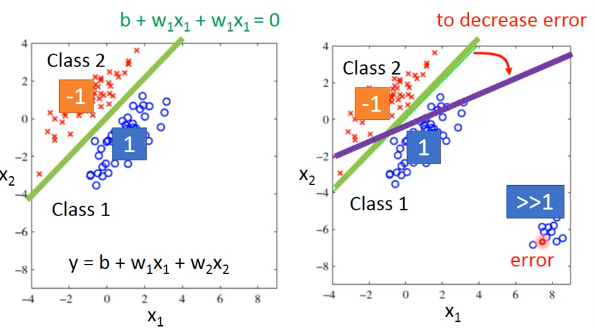
这会造成·「y 值太大的那些点会被照顾太多」，这样分界面会从我们希望的绿色转向紫色。这是由于 regression 的 loss-fn.并不适合做 classification。也就是我们·「看待 residue」的方式要改变，也就是说衡量模型好坏的标准要改变。
传统的方法有：perceptron，SVM
这里介绍一种基于概率分布的观点：
1.1 Gaussian Distribution
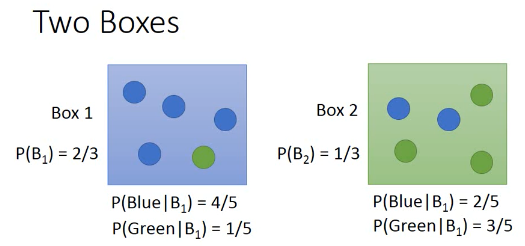
想想 bayes 定理：以 P(A and B) 的交换律为基础而形成的定理。
- 已经知道从 A/B 各自抽取的概率
- 已经知道 A/B 各自包含蓝绿球的比例
- ==> 问抽一个蓝球，来自与 A 的概率
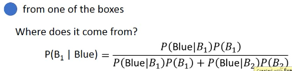
如果把盒子换成分类的话：
- 已经知道从 A/B 各自抽取的概率 | 1. 已经知道 A/B 类型各自的占比
- 已经知道 A/B 各自包含蓝绿球的比例 | 2. 已经知道某个样本点是 A/B 的概率
- ==> 问抽一个蓝球，来自与 A 的概率 | 3. ===> 这个样本点是 A 类型的概率
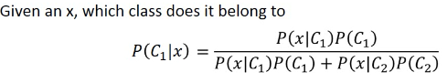
想得到(3),就得显得道 (1)(2), 所以我们想通过 trainingdata 来获得.
. Generative Model . . 这种想法很有用，叫做 Generative Model . 你可以通过这个模型 Generate 一个 x，P(x),如果你知道 x 的 distribution，你就可以 . 产生 x。
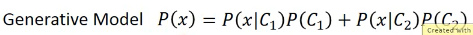
Prior Probability 算步骤(1): P(C1) P(C2) 直接通过 labeled data 来计算所有样本中 C1 类，C2 类各自的占比 Probability from Class 这个比较麻烦，新来的一个 testpoint:x,他不在 trainingdata 的 C1 样本中。我怎么判断他是出自 C1 的概率呢？换种思路：trainingdata 的所有 C1 样本也是从某个更大的 C1'样本集合中抽取出来的而新来的 testpoint 就是出自 C1'. 我们假设 C1 是通过 Gaussian distribution 从 C1'中抽取出来的。所以如果我能得到这个 Gaussian distribution，我就能得到 P(x|C1')
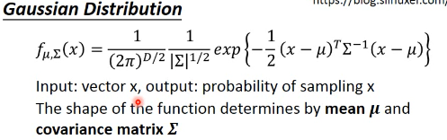
这是高斯分布的概率密度公式，他正比与高斯分布的概率值有两个变数，Σ μ, 同样的 x，如果带入不同的 Σ μ, 就会产生不同的高斯分布如果 trainingdata 中所有的 C1 点都是通过某个 Σ μ 抽取出来的，那么我就可以通过 trainingdata 中的所有 C1 点来得到 Σ μ, 得到这个高斯分布我再带入 testpoint:x, 就可以得到 P(x|C1')~~P(x|C1)
可以看出，如果 x 离 μ 越近这个 P(x|C1')的概率就越高，反之很低。
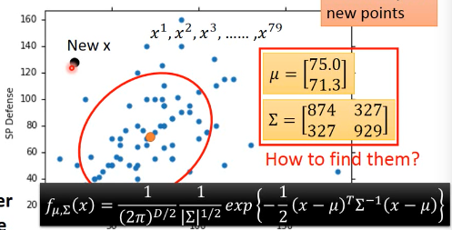
下面的问题是如何找到 Σ μ
1.2 Maximum Likelihood
任何一种高斯分布都·「有可能」抽取出训练集的 C1 点。只是有些地方概率高，有些地方概率低，但没有一个地方概率是 0。
但是不同的高斯分布抽取出 C1 的概率不一样。
从中选取 likelihood 最大的那个高斯分布 Likelihood 公式：
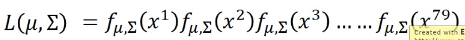
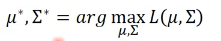
求微分就可以解答
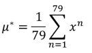
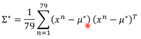
然后算出每一种 trainingdata 的分类所对应的 maximum likehood Gaussian
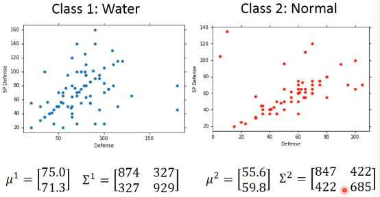
算法步骤 1. 直接通过 labeled data 来计算所有样本中 C1 类，C2 类各自的占比 Probability from Class P(x|C1) = Gaussian(μ1,Σ1) P(x|C2) = Gaussian(μ2,Σ2) 2. Now we can do classification P(C1|x) = P(x|C1)P(C1)/P(x) = P(x|C1)P(C1)/(x in C1) or (x in C2) = P(x|C1)P(C1)/(P(x|C1)P(C1) + P(x|C2)P(C2)) if P(C1|x) > 0.5 , x ∈ C1
+----------------------+--------------------------+ | | | | +-----------------+----------------+ | | | P(x|c1) | p(x|c2) | | | | | | | | +-----------------+----------------+ | | | | | p(c1) | P(c2) | +----------------------+--------------------------+
1.3 Modifying Model
make Covariance Matrix Σ same Σ 是跟 input 量成正比的，当 input 太大的时候，Σ会增长的很快。所以让他们一样，这样减少参数，避免 overfitting
modify Gaussian
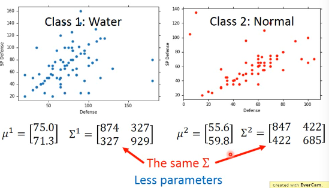
modify Maximumu likelihood
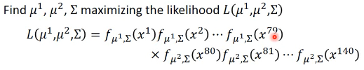
微分这个 maximum liklihood 公式，得到最好的 Σ μ: μ1' = average of C1 μ2' = average of C2 Σ' = C1 比例 × Σ1 + C2 比例 × Σ2 其中 Σ1Σ2 是用最原始的方法得到的两个 covariance matrix
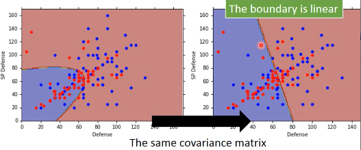
可以看到，当我们强制 covariance 相等时通过 微分最大似然函数 得到的两个概率分布然后再通过 post-probability 算出的 boundary 是线性的
·「总结」
1.3.1 tree steps
Funcion Set -> Post probability of different P(x|c1) and P(x|c2)
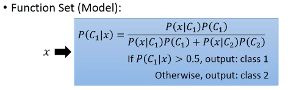
Goodness of a function -> Σμ make Likelihood is larger
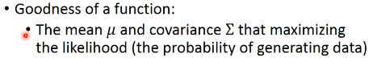
Find the best -> a analogy result 注意这个模型不像其他模型需要通过·「循环优化」,他是可以通过微分直接求出最优解
1.4 Many other Probability Distribution
人来决定这个 tradoff，复杂的概率模型 bias 就小，variance 就大。
1.4.1 假设 input 多个 feature 相互独立来简化概率模型 :Naive Bayes:
- 从向量上看，没有任何关系就是，两个向量的相似度为 0，那么他们应该是·「垂直的」。
- 从概率上看，没有任何关系就是·「独立事件」。
如果我们假设 inputpoint 的各个维度(feature)之间没有任何关系：
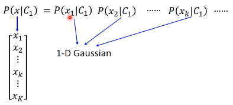
那么，一个 K 维度高斯，就被转换成 K 个一维度高斯的乘积。这大大简化了 K 维度高斯的 Σμ 的计算。但是这么做是有风险的,有可能损失了·「特征间关系」这一信息。让模型没法对·「正确的特征做强有力的映射」。最后会出现 underfitting。
这种·「独立性假设」化简概率模型然后来做分类的方法就叫做 Naive Bayes Classifier
1.4.2 根据问题目标来决定概率模型：
- 两个 feature，Bernoulli Distribution
1.5 Dive into Posterior Probability Sigmoid
1.5.1 引入 sigmoind
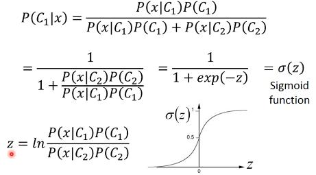
post-probability ===> Sigmoid function P(C1|x) = σ(z)
1.5.2 殊途同归：统一向量模型和概率模型
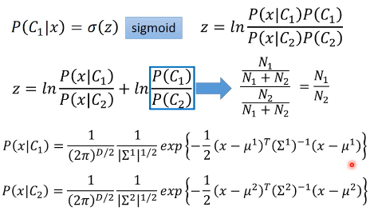
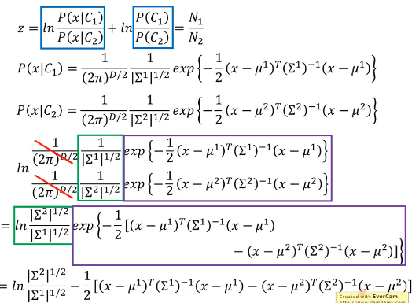
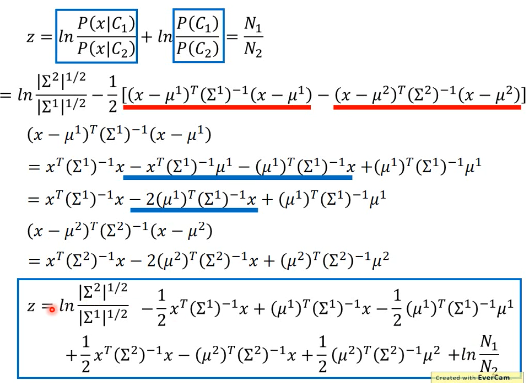
如果我们按照之前的假设： Σ1 = Σ2 = Σ
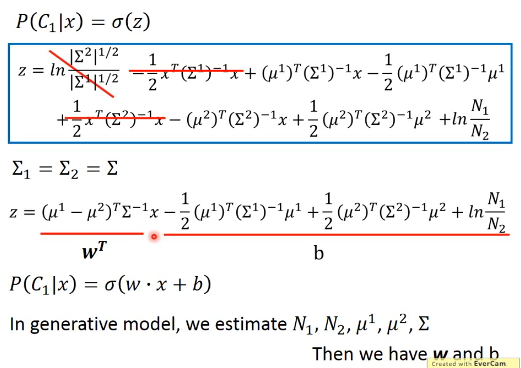
之前已经对比过，post-probability 就是 function set 可以看到，最后的 post-probability 被化简成一个 ·「线性组合的 sigmoid 激活」这也解释了，为什么之前做了 ·「假设协方差矩阵相等」这个让步之后，得到的 boundary 是线性的。
既然，最终都可以通过 ·「假设协方差矩阵相等」这个让步，把复杂的·「概率模型」转换为一个·「向量线性组合模型」,为什么不直接找这个向量模型呢？详情见下一节课